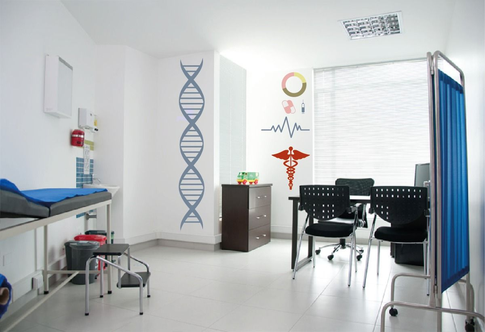

clínicos
- Fernando garcia
- lunes y miércoles de 8 a 12hs
- martes y jueves de 15 a 19hs
- viernes de 14 a 17hs
- Gustavo Pérez
- lunes y miércoles de 15 a 18hs
- martes y jueves de 8 a 11hs
- jose colman
- lunes y miercoles de 8 a 15hs
- vanesa abasto
- lunes, martes y jueves de 15 a 18hs
- viernes de 15 a 19hs
- martin gomez
- lunes, martes y miercoles de 8 a 12hs
